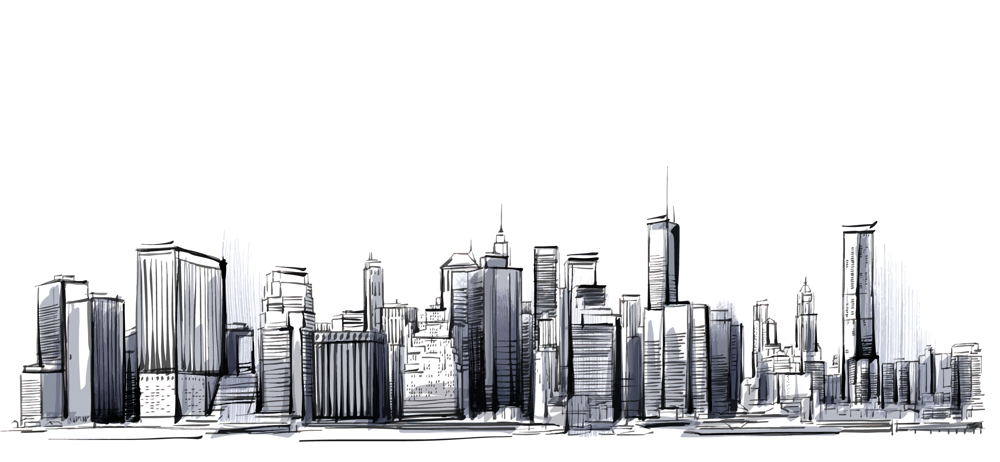
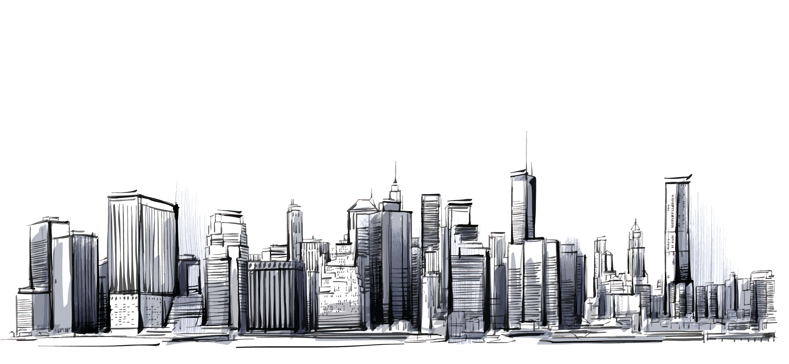
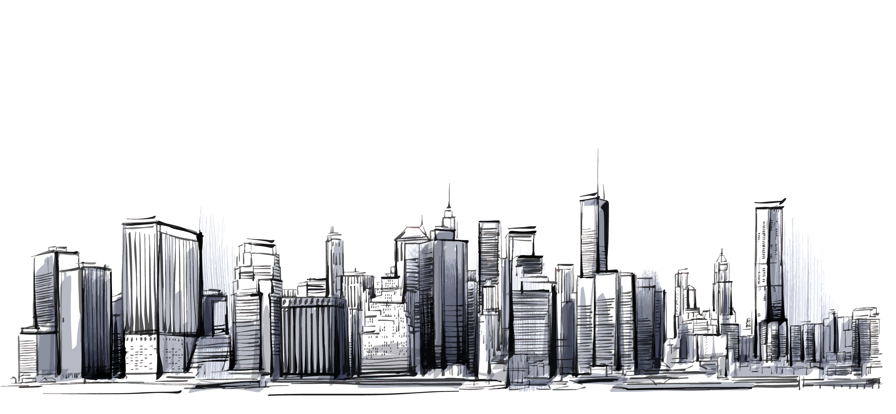
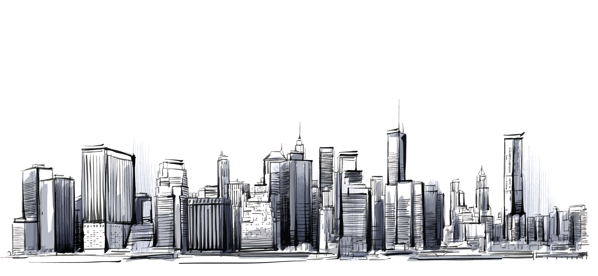

I'm Syafiq.
a web developer.
 



I am recently graduated in Engineering Technology with a focus in electronics, control system, and Internet of Thing. I also love my programming skills. 😁

I am a dedicated, hardworking and proactive engineer with a strong background in electronics, programming language, control system, Internet of Thing, and battery technology. I have solid work experience in research, designing and analyzing processes to increase the overall efficiency of new technology.

Although my background study in engineering technology, I also love my programming skills. Therefore, in order to avoid losing my programming skills, I often do activities that use programming. I learned several programming languages including HTML, CSS, and JavaScripts. My strong in these languages help me to create my website and be a freelancer web developer.